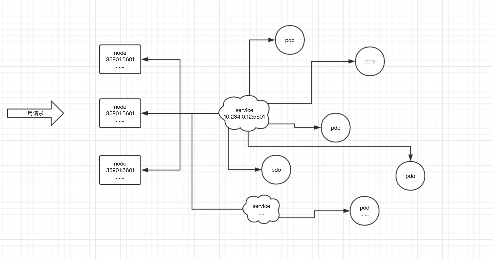
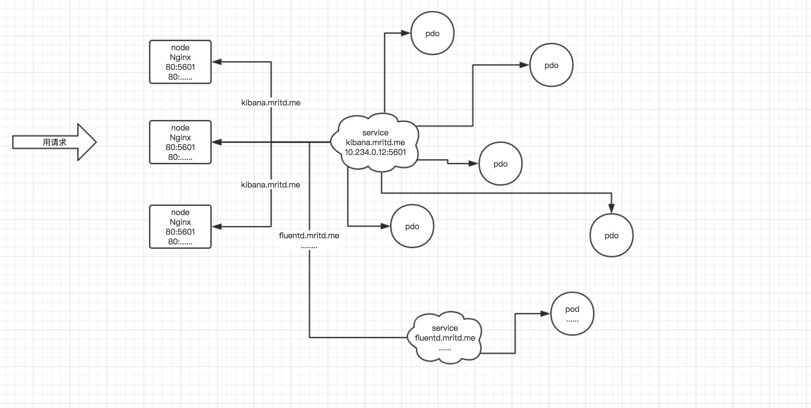
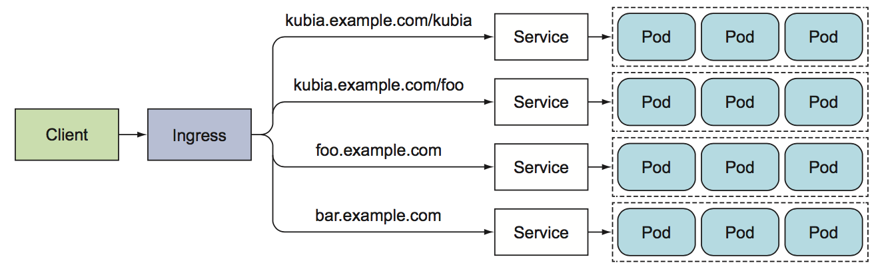
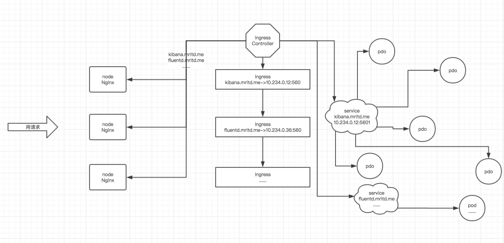

ingress
再次回顾一下集群内服务想要暴露出去面临着几个问题，这也是为什么我们要用ingress，基本分析如下：
1. Pod 漂移问题
Kubernetes 具有强大的副本控制能力，能保证在任意副本(Pod)挂掉时自动从其他机器启动一个新的，还可以动态扩容等，总之，这个 Pod 可能在任何时刻出现在任何节点上，也可能在任何时刻死在任何节点上；但是随着 Pod 的创建和销毁，Pod IP 会动态变化；那么如何把这个动态的 Pod IP 暴露出去？借助于 Kubernetes 的 Service 机制，Service 可以以标签的形式选定一组带有指定标签的 Pod，并监控和自动负载他们的 Pod IP，然后，我们向外暴露 Service IP 就行了；这就是 NodePort 模式：即在每个节点上开起一个端口，然后转发到内部 Pod IP 上，如下图所示:

2. 端口管理问题
采用 NodePort 方式暴露服务面临一个很大的问题是，服务一旦多起来，NodePort 在每个节点上开启的端口会及其庞大，而且难以维护；这时候引出的思考问题是 “能不能使用 Nginx 只监听一个端口，比如 80，然后按照域名向后转发？” 这思路很好，简单的实现就是使用 DaemonSet 在每个 node 上监听 80，然后写好规则，因为 Nginx 外面绑定了宿主机 80 端口(就像 NodePort)，本身又在集群内，那么向后直接转发到相应 Service IP 就行了，如下图所示 
3. 域名分配及动态更新问题
采用 Nginx 似乎已经解决了问题，但是其实这里面有一个很大缺陷：如果有新服务加入怎么改 Nginx 配置？总不能手动改或者来个 Rolling Update 前端 Nginx Pod 吧？这就是 Ingress 要做的事情。
4. 公网IP资源问题
如果采用 LoadBalancer 服务，每个服务都需要自己的负载均衡器，以及独立的公有IP地址，而使用Ingress只需要一个公网IP就能为许多服务提供访问，当客户端向Ingress发送HTTP请求时，Ingress 会根据请求的主机名和路径决定请求转发到后端的pod； 
Ingress Controller 和 Ingress
Ingress Controller 通过与 Kubernetes API 交互，动态的去感知集群中 Ingress 规则变化，然后读取它，并按照它自己模板生成一段 Nginx 配置，再写到 Nginx Pod 里，最后 reload 一下，新版本 Kubernetes 已经将 Nginx 与 Ingress Controller 合并为一个组件，所以 Nginx 无需单独部署，只需要部署 Ingress Controller 即可。 
部署 Ingress Controller
部署 Ingress Controller，拉镜像有点耗时：
$ kubectl apply -f https://raw.githubusercontent.com/kubernetes/ingress-nginx/master/deploy/mandatory.yaml
指定版本安装：
wget https://raw.githubusercontent.com/kubernetes/ingress-nginx/nginx-0.20.0/deploy/mandatory.yaml
镜像下载失败:
docker pull registry.cn-qingdao.aliyuncs.com/kubernetes_xingej/nginx-ingress-controller:0.20.0
docker pull registry.cn-qingdao.aliyuncs.com/kubernetes_xingej/defaultbackend-amd64:1.5
然后替换镜像地址即可
创建 Ingress controller 的service, 不配置的话Ingress Controller 无法被访问:
- ingress-control 使用nodePort 方式暴漏服务
- ingress-control 使用hostNetwork 方式暴漏服务
建议：ingress-control 使用hostnetwork 模式 性能比使用service nodePort 性能好很多 ，我们测试使用hostNetwork方式：
template:
spec:
hostNetwork: true
或者创建个service：
#ingress-svc.yaml
apiVersion: v1
kind: Service
metadata:
labels:
app.kubernetes.io/name: ingress-nginx
app.kubernetes.io/part-of: ingress-nginx
name: nginx-ingress-controller
namespace: ingress-nginx
spec:
ports:
- port: 80
protocol: TCP
nodePort: 30000
- port: 18080
nodePort: 32000
name: http-mgmt
selector:
app.kubernetes.io/name: ingress-nginx
app.kubernetes.io/part-of: ingress-nginx
type: NodePort
$ kubectl create -f ingress-svc.yaml
测试http 7层负载
1.先创建集群和服务
#ingress-test.yaml
apiVersion: extensions/v1beta1
kind: Deployment
metadata:
name: nginx
spec:
template:
metadata:
labels:
app: nginx
spec:
containers:
- image: nginx
imagePullPolicy: IfNotPresent
name: nginx
ports:
- containerPort: 80
---
apiVersion: v1
kind: Service
metadata:
name: nginx
spec:
selector:
app: nginx
ports:
- protocol: TCP
port: 80
targetPort: 80
kubectl create -f ingress-test.yaml
2.创建对应的一个ingress对象来暴露集群里这个nginx的http服务
#nginx.testdomain.com.yaml
apiVersion: extensions/v1beta1
kind: Ingress
metadata:
name: nginx-ingress
spec:
rules:
- host: nginx.testdomain.com
http:
paths:
- path: /
backend:
serviceName: nginx
servicePort: 80
字段解释：
host: nginx.testdomain.com 表明Ingress 将域名 nginx.testdomain.com 映射到你的服务
- path: / 表明将所有的请求发送到 nginx 的80端口
创建 Ingress：
kubectl create -f nginx.testdomain.com.yaml
kubect get ingress
3.验证
找到ingress nginx的pod名字后通过命令查看里面nginx配置文件能找到有对应的配置段生成。
kubectl -n ingress-nginx exec nginx-ingress-controller-bfd6987c9-hbcw9 -- cat /etc/nginx/nginx.conf
## start server nginx.testdomain.com
server {
server_name nginx.testdomain.com ;
listen 80;
set $proxy_upstream_name "-";
location / {
set $namespace "default";
set $ingress_name "nginx-ingress";
set $service_name "nginx";
set $service_port "80";
set $location_path "/";
........
## end server nginx.testdomain.com
4.测试
设置hosts文件把域名nginx.testdomain.com设置到对service的那个externalIPs的ip上，打开浏览器访问nginx.testdomain.com即可发现集群内的nginx已经暴露在集群外，比如：
[root@master01 service]# cat /etc/hosts
192.168.10.242 node01
192.168.10.243 node02
192.168.10.232 maste01
192.168.10.243 nginx.testdomain.com
使用NodePort方式测试一下
# ingress controller
apiVersion: v1
kind: Service
metadata:
labels:
app.kubernetes.io/name: ingress-nginx
app.kubernetes.io/part-of: ingress-nginx
name: nginx-ingress-controller-1
namespace: ingress-nginx
spec:
ports:
- port: 80
protocol: TCP
targetPort: 80
selector:
app.kubernetes.io/name: ingress-nginx
app.kubernetes.io/part-of: ingress-nginx
type: NodePort
创建 RS kubia
#kubia-replicaset.yaml
apiVersion: apps/v1beta2
kind: ReplicaSet
metadata:
name: kubia
spec:
replicas: 3
selector:
matchLabels:
app: kubia
template:
metadata:
labels:
app: kubia
spec:
containers:
- name: kubia
image: luksa/kubia
imagePullPolicy: IfNotPresent
创建 kubia的 service
#kubia-svc-nodeport.yaml
apiVersion: v1
kind: Service
metadata:
name: kubia-nodeport
spec:
type: NodePort
ports:
- port: 80
targetPort: 8080
nodePort: 30123
selector:
app: kubia
创建kubia ingress:
#kubia-ingress.yaml
apiVersion: extensions/v1beta1
kind: Ingress
metadata:
name: kubia
spec:
rules:
- host: kubia.example.com
http:
paths:
- path: /
backend:
serviceName: kubia-nodeport
servicePort: 80
相同的Ingress 暴露多个服务
相同主机，不同路径 仔细查看ingress 配置发现 ， rules和 paths都是数组类型，因此可以包含多个条目。一个Ingress 可以将多个主机和路径映射到多个服务，比如多个paths：
apiVersion: extensions/v1beta1
kind: Ingress
metadata:
name: mix
spec:
rules:
- host: kubia.example.com
http:
paths:
- path: /kubia
backend:
serviceName: kubia-nodeport
servicePort: 80
- path: /nginx
backend:
serviceName: nginx
servicePort: 80
不同主机，不同路径
apiVersion: extensions/v1beta1
kind: Ingress
metadata:
name: mix2
spec:
rules:
- host: kubia.example.com
http:
paths:
- path: /
backend:
serviceName: kubia-nodeport
servicePort: 80
- host: nginx.testdomain.com
http:
paths:
- path: /
backend:
serviceName: nginx
servicePort: 80
根据请求头中的HOST来控制收到的请求将被转发到哪个服务，DNS需要将 nginx.testdomain.com 和 kubia.example.com 都解析到 Ingress控制器的IP。比如：
# curl -H "HOST:nginx.testdomain.com" 192.168.10.243
Ingress workflow

Ingress with tls
# openssl genrsa -out tls.key 2048
# openssl req -new -x509 -key tls.key -out tls.cert -days 360 -subj /CN=kubia.example.com
# kubectl create secret tls tls-secret --cert=tls.cert --key=tls.key
私钥和证书存在名为 tls-secret 的Secret中。现在更新 Ingress 对象配置，让它可以处理https请求：
apiVersion: extensions/v1beta1
kind: Ingress
metadata:
name: kubia
spec:
tls:
- hosts:
- kubia.example.com
secretName: tls-secret
rules:
- host: kubia.example.com
http:
paths:
- path: /
backend:
serviceName: kubia-nodeport
servicePort: 80
说明：
spec.tls: 表明所有的TLS配置
secretName: tls-secret 表明从 tls-secret 中获取之前创建的私钥和证书
tls.hosts 表明将接收来自 kubia.example.com主机的TLS连接
验证https访问是否成功：
# curl -k -v -H "HOST:kubia.example.com" https://192.168.10.243
* About to connect() to 192.168.10.243 port 443 (#0)
* Trying 192.168.10.243...
* Connected to 192.168.10.243 (192.168.10.243) port 443 (#0)
* Initializing NSS with certpath: sql:/etc/pki/nssdb
* skipping SSL peer certificate verification
* SSL connection using TLS_ECDHE_RSA_WITH_AES_256_GCM_SHA384
* Server certificate:
* subject: CN=Kubernetes Ingress Controller Fake Certificate,O=Acme Co
* start date: Apr 13 10:15:39 2019 GMT
* expire date: Apr 12 10:15:39 2020 GMT
* common name: Kubernetes Ingress Controller Fake Certificate
* issuer: CN=Kubernetes Ingress Controller Fake Certificate,O=Acme Co
> GET / HTTP/1.1
> User-Agent: curl/7.29.0
> Accept: */*
> HOST:kubia.example.com
>
< HTTP/1.1 200 OK
< Server: nginx/1.15.10
< Date: Sat, 13 Apr 2019 13:15:34 GMT
< Transfer-Encoding: chunked
< Connection: keep-alive
< Strict-Transport-Security: max-age=15724800; includeSubDomains
<
You\'ve hit kubia-kqzbh
* Connection #0 to host 192.168.10.243 left intact
Ingress 四层转发支持
测试UDP转发， 比如dns服务:
#dns.yaml
apiVersion: v1
kind: ConfigMap
metadata:
name: udp-services
namespace: ingress-nginx
data:
53: "kube-system/kube-dns:53"
查看nginx配置：
server {
preread_by_lua_block {
ngx.var.proxy_upstream_name="udp-kube-system-kube-dns-53";
}
listen 53 udp;
proxy_responses 1;
proxy_timeout 600s;
proxy_pass upstream_balancer;
}
添加并测试该转发配置：
# kubectl apply -f dns.yaml
# host -t A nginx.default.svc.cluster.local 192.168.10.243
测试TCP转发，比如mysql服务：
#mysql.yaml
apiVersion: v1
kind: ReplicationController
metadata:
name: mysql
spec:
replicas: 1
selector:
app: mysql
template:
metadata:
labels:
app: mysql
spec:
containers:
- name: mysql
image: mysql
imagePullPolicy: IfNotPresent
ports:
- containerPort: 3306
env:
- name: MYSQL_ROOT_PASSWORD
value: "123456"
创建mysql 服务：
kubectl apply -f mysql.yaml
mysql ingress配置：
kind: ConfigMap
apiVersion: v1
metadata:
name: tcp-services
namespace: ingress-nginx
data:
3306: "default/mysql:3306"
查看nginx配置：
server {
preread_by_lua_block {
ngx.var.proxy_upstream_name="tcp-default-mysql-3306";
}
listen 3306;
proxy_timeout 600s;
proxy_pass upstream_balancer;
}
远程登录mysql测试：
[root@master01 service]# mysql -uroot -h192.168.10.243 -p
Enter password: 123456
Welcome to the MariaDB monitor. Commands end with ; or \g.
Your MySQL connection id is 17
Server version: 8.0.15 MySQL Community Server - GPL
Copyright (c) 2000, 2018, Oracle, MariaDB Corporation Ab and others.
Type 'help;' or '\h' for help. Type '\c' to clear the current input statement.
MySQL [(none)]>
mysql 登陆认证问题：
如果是mysql服务器版本大于8.0.4，默认使用caching_sha2_password授权插件，而不是5.6/5.7使用的mysql_native_password进行身份验证。
下面方法更改root账户的远程登录验证插件为mysql_native_password
$ docker exec -it mysql(或CONTAINER ID) mysql -u root -p
输入 root 进入mysql提示符
MySQL [(none)]>
设置认证兼容方式：
MySQL [(none)]>ALTER USER 'root'@'%' IDENTIFIED WITH mysql_native_password BY 'root';
设置远程访问：
mysql> ALTER USER 'root'@'%' IDENTIFIED WITH mysql_native_password BY '123456';
刷新权限，使改的生效：
mysql> FLUSH PRIVILEGES；
MySQL [(none)]>SELECT User,Host,plugin FROM mysql.user;
MySQL [(none)]>exit
[root@localhost ~]# docker restart mysql(或CONTAINER ID 1663792fad63)
监控
查看ingress contrller 请求信息：
http://192.168.10.243:80/nginx_status
但是只有文字，没有图形，首先检查是否开启vts:
kubectl get configmap nginx-configuration -n ingress-nginx -o yaml
output:
data:
enable-vts-status: "true"
proxy-body-size: 20m
检查docker配置是否开启 vts:
kubectl exec -it nginx-ingress-controller-76c86d76c4-8xq5r -n ingress-nginx -- cat /etc/nginx/nginx.conf | grep vhost_traffic_status_display
location /nginx_status {
set $proxy_upstream_name "internal";
vhost_traffic_status_display;
vhost_traffic_status_display_format json;
access_log off;
stub_status on;
}
再检查nginx编译时，是否支持 vts；
# nm nginx |grep vhost_traffic_status
编译nginx支持 vts:
https://github.com/vozlt/nginx-module-vts#installation
example:
./configure --prefix=/somewhere --add-module=/path-to-your-module.
Ingress 相关结构体定义：
kubernetes/vendor/k8s.io/api/extensions/v1beta1/types.go
Ingress Controller github
Others:
- Ingress NGINX: Kubernetes 官方维护的方案，也是本次安装使用的 Controller。
- F5 BIG-IP Controller: F5 所开发的 Controller，它能够让管理员通过 CLI 或 API 让 Kubernetes 与 OpenShift 管理 F5 BIG-IP 设备。
- Ingress Kong: 著名的开源 API Gateway 方案所维护的 Kubernetes Ingress Controller。
- Traefik: 是一套开源的 HTTP 反向代理与负载均衡器，而它也支援了 Ingress。
- Voyager: 一套以 HAProxy 为底的 Ingress Controller。